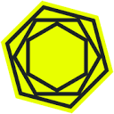

Cybersecurity Assessment & Assurance · area 1 of 8
Vulnerability Assessment
Bring findings in from the scanners you already run, enrich every CVE with live threat data, and rank it by what is exploitable on that asset. Our team validates what the tools can’t.
Who delivers it
PlatformThe platform does the assessment work. Our team validates and tunes it.
- 10Platform
- 1Platform + our team
- 1Our team
AI in 1 capability: fix plans.
Who does what
Every capability, and who delivers it.
Scanner intake and hosted scans, CVE identification, CVSS scoring, severity classification and remediation recommendations. Each row says whether it is shipped in the platform, done by our team, or both, and whether any AI is involved.
| Capability | What happens | Delivered by | AI |
|---|---|---|---|
| Scanner intake | Pull findings from Tenable Nessus and Rapid7 Nexpose / InsightVM. | Platform | No AI |
| Hosted scans | Launch a Nessus or Tenable scan from the platform, follow it, and pull the results in. | Platform | No AI |
| Cloud scanners | AWS Inspector, Microsoft Defender for Cloud and Google Security Command Center. AWS uses an assumed role; its temporary credentials are not stored. | Platform | No AI |
| Spreadsheet import | Scan reports and bulk vulnerability lists as Excel or CSV. | Platform | No AI |
| CVE identification | A CVE and CWE ids per finding, and a title-to-CVE lookup that never fills in a guess. | Platform | No AI |
| CVSS, side by side | The scanner’s score and vector (3.1 or 4.0) kept apart from NVD’s score for the same CVE, so both can be shown. | Platform | No AI |
| Enrichment | NVD, FIRST.org EPSS and CISA KEV refreshed daily, Exploit-DB weekly, plus GitHub proof-of-concept counts; also on import and on demand. | Platform | No AI |
| Severity and effective risk | Scanner severity, plus effective risk from a fixed formula of CVSS, EPSS, KEV, asset value and business impact, with a plain-English reason. | Platform | Not AI: a fixed formula |
| Remediation recommendations | Microsoft patch (KB) links, else CISA KEV’s required action, else the vendor advisories NVD lists. | Platform | No AI |
| Fix plans | A summary, a copy-paste fix and the rationale per finding; approved, applied by your team, verified by a re-scan. | Platform | Suggests, you confirmDrafted by AI when it is configured, otherwise by a template. |
| Validation | Confirming results beyond the tools’ own checks and weeding out false positives. | Our team | No AI |
| Running the programme | Scan schedules agreed with your teams, results triaged with owners, retests booked. | Platform + our team | No AI |
From scanner to ranked finding
Pick a finding: enrichment, the formula, the fix.
The same CVSS 7.5 or 8.1 can rank critical or low: the asset and the threat data decide.
Sources

Tenable Nessus412 findings · pulled 06:00- Rapid7 InsightVM188 findings · pulled 06:10
 AWS Inspector · prod-payments57 findings · assumed role
AWS Inspector · prod-payments57 findings · assumed role Microsoft Defender for Cloud31 findings
Microsoft Defender for Cloud31 findings- Google Security Command CenterNot connected
- Excel upload · q3-findings.xlsx24 rows mapped
Enriched on import, on demand and on a schedule: NVD, EPSS and CISA KEV daily; Exploit-DB weekly; GitHub proof-of-concept counts.
F-104OpenSSH signal handler race (regreSSHion)
jump-host-01 · 10.20.1.5 · Admin jump host · Internal
- CVE
- CVE-2024-6387
- CVSS
- 8.1 scanner · NVD 8.1
- EPSS
- 0.38
- CISA KEV
- Not listed
- Public exploit
- GitHub PoC
- CWE
- CWE-364
| Input | Value | Weight | Share | Adds |
|---|---|---|---|---|
| CVSS ÷ 10 | 8.1 | × 0.30 | +0.243 | |
| EPSS | 0.38 | × 0.25 | +0.095 | |
| CISA KEV | not listed | × 0.20 | +0.000 | |
| Asset value | CIA 4 of 5 | × 0.10 | +0.080 | |
| Business impact − 1 | 1.2, operational dependency | × 0.15 | +0.030 |
Effective risk0.448MediumNot AI: a fixed formula
Medium: a high CVSS, but a moderate chance of exploitation, not known exploited, on an internal admin host.
Recommendation · from the source data
Upgrade OpenSSH to 9.8p1 or later on jump-host-01.
Fix plan Suggests, you confirm
Upgrade OpenSSH to 9.8p1 or later on jump-host-01
# jump-host-01 · Ubuntu 22.04
sudo apt-get update
sudo apt-get install --only-upgrade openssh-server
ssh -V # expect OpenSSH 9.8p1 or laterDrafted by AI when configured, otherwise by a template. Recommended → approved → applied by your team → verified by a re-scan.
F-101OS command injection in the remote access gateway
vpn.example-bank.sa · Remote access gateway · Internet-facing
- CVE
- CVE-2024-3400
- CVSS
- 10.0 scanner · NVD 10.0
- EPSS
- 0.94
- CISA KEV
- Listed
- Public exploit
- Exploit-DB · GitHub PoC
- CWE
- CWE-77
| Input | Value | Weight | Share | Adds |
|---|---|---|---|---|
| CVSS ÷ 10 | 10.0 | × 0.30 | +0.300 | |
| EPSS | 0.94 | × 0.25 | +0.235 | |
| CISA KEV | listed | × 0.20 | +0.200 | |
| Asset value | CIA 5 of 5 | × 0.10 | +0.100 | |
| Business impact − 1 | 1.3, internet-facing | × 0.15 | +0.045 |
Effective risk0.880CriticalNot AI: a fixed formula
Critical: maximum CVSS, very likely to be exploited, listed in CISA KEV, on an internet-facing gateway.
Recommendation · from the source data
Apply the vendor hotfix for CVE-2024-3400 on the gateway, then rotate the credentials it holds.
Fix plan Suggests, you confirm
Apply the vendor hotfix for CVE-2024-3400 on the gateway, then rotate the credentials it holds
# remote access gateway
# 1. apply the vendor hotfix for CVE-2024-3400
# 2. rotate credentials stored on the gateway
# 3. request a re-scan of vpn.example-bank.saDrafted by AI when configured, otherwise by a template. Recommended → approved → applied by your team → verified by a re-scan.
F-105SWEET32: 64-bit block ciphers offered on TLS
core-bank-db-01 · 10.20.4.11 · Core banking database · Internal
- CVE
- CVE-2016-2183
- CVSS
- 7.5 scanner · NVD 7.5
- EPSS
- 0.02
- CISA KEV
- Not listed
- Public exploit
- None found
- CWE
- CWE-200
| Input | Value | Weight | Share | Adds |
|---|---|---|---|---|
| CVSS ÷ 10 | 7.5 | × 0.30 | +0.225 | |
| EPSS | 0.02 | × 0.25 | +0.005 | |
| CISA KEV | not listed | × 0.20 | +0.000 | |
| Asset value | CIA 5 of 5 | × 0.10 | +0.100 | |
| Business impact − 1 | 1.4, regulated data | × 0.15 | +0.060 |
Effective risk0.390LowNot AI: a fixed formula
Low: a high CVSS, but very unlikely to be exploited and reachable only inside the network.
Recommendation · from the source data
Remove 3DES cipher suites once the legacy client is retired; exception approved until then.
Fix plan Suggests, you confirm
Remove 3DES cipher suites once the legacy client is retired
# core-bank-db-01 · TLS cipher policy
# remove 3DES suites once the legacy client is retired
# exception approved until 31 Mar 2027Drafted by AI when configured, otherwise by a template. Recommended → approved → applied by your team → verified by a re-scan.
Rules of engagement
Active tests run only inside a scope you sign.
Where this area involves active testing, our team runs it under the same seven rules as every engagement. Our team
How our team runs every engagement- Signed authorisationSigned 30 Oct 2026
- A written scope3 hosts · 2 apps · 1 API
- Agreed testing windowsSun–Thu, 22:00–04:00 AST
- Non-destructive by defaultIntrusive tests approved: none
- Rate limitsAt most 10 requests a second per host
- A named stop contact and procedureClient: Head of IT Operations · Ours: engagement lead
- Every action recordedEngagement log + platform audit trail
These are our team’s controls, agreed in writing before any test. The platform keeps the record: scope, findings, evidence and every change to them.
The eight areas
Cybersecurity Assessment & Assurance
Where it runs
- The module hubThe console, the rules of engagement and how the work flows, step by step.
- Integrations & IdentityThe scanner and cloud connectors that bring findings in.
- Cybersecurity Assessment, the serviceWhat our team does, scoped and signed off before any active test.
- AI in this moduleEvery AI capability in Cybersecurity Assessment & Assurance, and who approves it.
See Vulnerability Assessment on your own estate.
Demos are scoped to your regulators and your stack. Pick a slot and we’ll walk through it live.